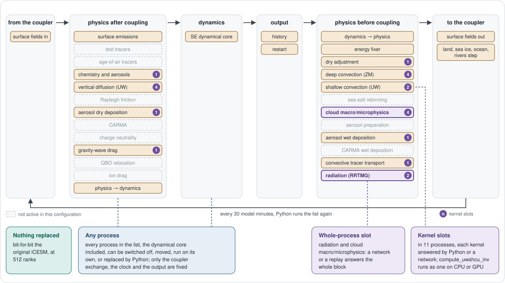

How freeCAM works
In freeCAM, Python owns the workflow, the clock, the coupling decisions, and rank-local state, while the original Fortran stays the numerical source of truth and is called through generated, C-interoperable adapters. Every physics process is owned by a Python class, and inside each class the numerical cores are kernels that can be replaced.
Three layers
Figure 1 shows the architecture of freeCAM, which consists of three layers. In this section, we describe them from top to bottom.
User interface. The user interface runs on the user's machine or a login node. A user drives freeCAM in one of three ways: ➊ a notebook or script, ➋ the Workflow Builder, which edits the step in a browser, and ➌ a PBS batch job. All of them reach the control layer through a persistent MPI job of 512 ranks.
Python control layer. This layer runs on every MPI rank of the compute nodes and decides which process runs next. Specifically, the driver holds the step as an ordered plan of processes, together with the clock and a trace of what ran. The StatePool exposes the model state as NumPy arrays, into which the Fortran points directly. Further, each of the 23 physics processes is a Python class with slots, and a slot can be filled by a Python function, a compiled plugin, a replay, or a trained network on CPU or GPU. Finally, the boundary couples CAM online with the live CESM surface models, or replays captured boundary data.
Native layer. Below the control layer, generated adapters call the original CAM Fortran. These adapters convert only pointers, shapes, scalars, and communicators, and contain no arithmetic of their own. As such, the original Fortran still computes every number, both in the CAM image and in the library of the surface models and the coupler.

One simulation step
Figure 2 shows one model simulation step of freeCAM. Specifically, each step advances the simulation by 30 minutes, during which Python runs the processes one at a time, following an ordered list. Users can change the step at three levels. ➊ Every process in the list, the SE dynamical core included, can be switched off, moved, run on its own, or replaced by a Python function. ➋ Radiation and cloud macro/microphysics each have a whole-process slot, which a trained network or a replay can fill. ➌ Eleven processes have kernel slots, and each kernel can be filled by a Python function or a trained network. For example, the network that replaces compute_uwshcu_inv in the Overview fills such a kernel slot, on CPU or GPU.

